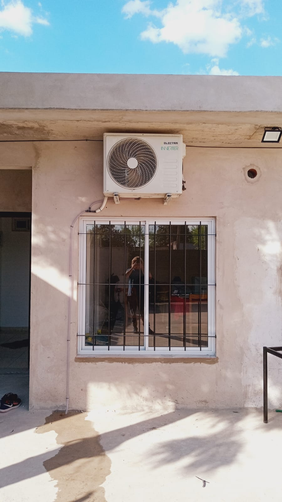
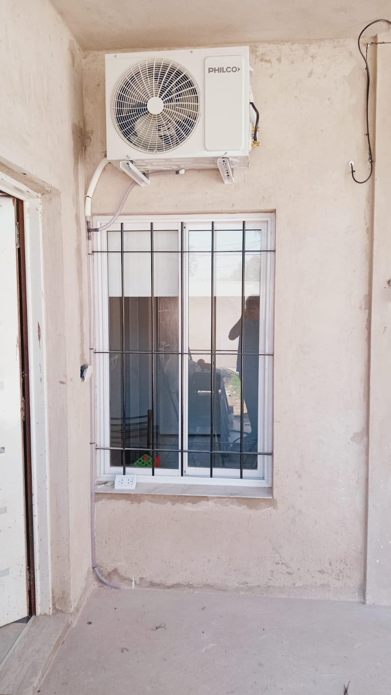
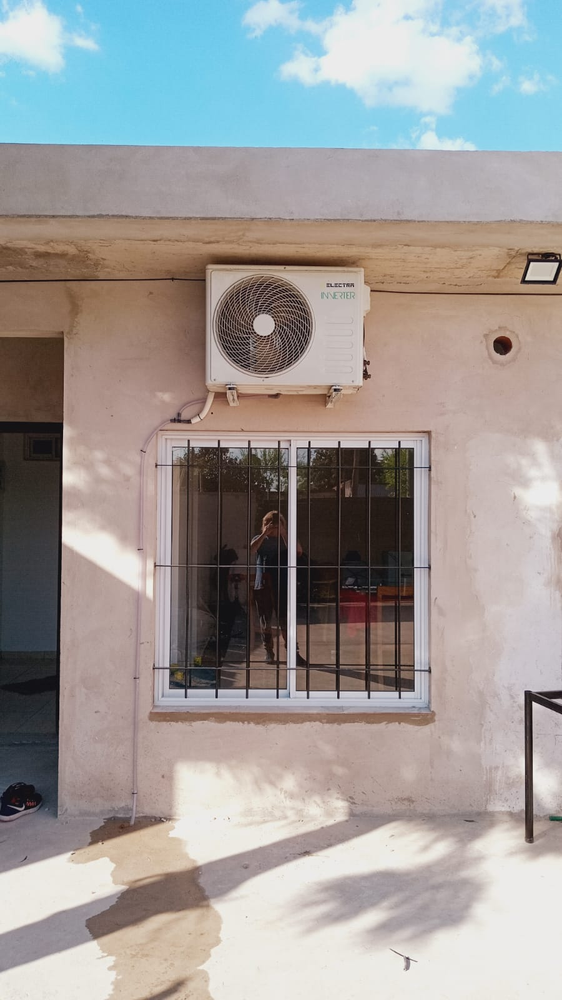
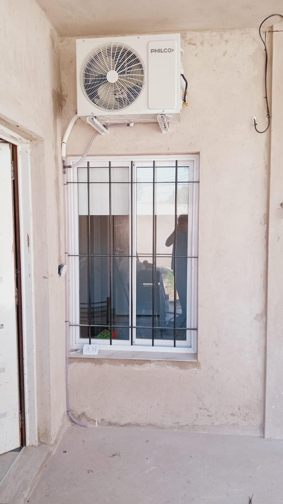

Trabajos realizados
 





Testimonios de clientes
“Muy profesional. Carlos instaló el aire en mi casa y quedó impecable. Todo limpio y funcionando perfecto.â€
- Romina V., Castelar
- Romina V., Castelar
“Llamé a último momento y vino el mismo dÃa. Trabajo rápido, prolijo y muy amable.â€
- Daniel S., Ituzaingó
- Daniel S., Ituzaingó
“Recomiendo totalmente. Excelente atención y conocimiento técnico. VolverÃa a llamarlo.â€
- Laura M., Morón
- Laura M., Morón
“Quedamos muy conformes. Nos explicó todo con paciencia y dejó el lugar mejor de lo que estaba.â€
- Jorge y Miriam, Haedo
- Jorge y Miriam, Haedo
Contacto
📠Teléfono / WhatsApp: Enviar mensaje
📧 Email: acostacarlosandres919@gmail.com
📠Av. Roca 2463 – Cruce Castelar
📠Zona de trabajo: Gran Buenos Aires
🕒 Horario: Lunes a Sábado de 08:00 a 18:00 hs